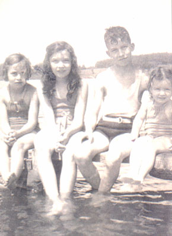

| Catherine Beatrice Brown, or "Bea" as she was known, was born to Robert & Christina Brown on June 30th, 1929. She was the third among four children. |
 |
|
|
Bea married Bob Spicer in Syracuse, NY on June 28, 1952. They lived in Liverpool, NY and had two children together. Her first child, Stephen, died when he was only six weeks old. |